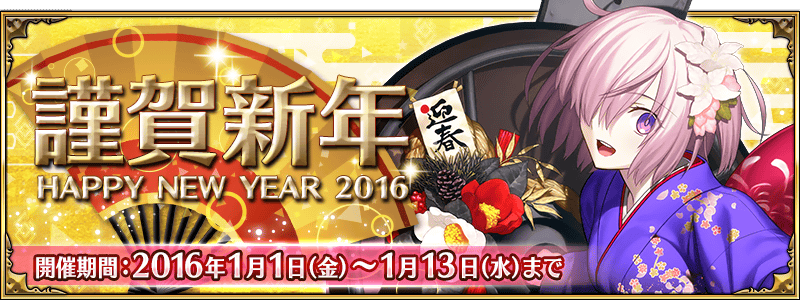
給各位Master的壓歲錢！ 實施新年頭三天限定的特別登入加成！
◆宣傳活動舉辦期間◆
2016年1月1日（五）3：00～1月4日（一） 2:59
◆宣傳活動對象者◆
在上述期間，有遊玩Fate/Grand Order
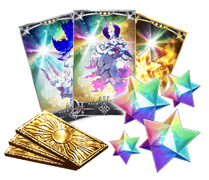
◆禮物内容◆
1月1日（五）
聖晶石16個
呼符1枚
1月2日（六）
フォウくん卡計16枚
★3（ALL）ATK8枚
★3（ALL）HP8枚
呼符1枚
1月3日（日）
經驗值卡★4（ALL）16枚
呼符1枚
◆領取條件◆
1月1日（五）的分：1月1日（五） 3:00～1月2日（六） 2:59
1月2日（六）的分：1月2日（六） 3:00～1月3日（日） 2:59
1月3日（日）的分：1月3日（日） 3:00～1月4日（一） 2:59
在上述的期間內登入的用戶為對象。
※期間內沒登入的話無法領取。
※禮物只能領取1次
並且，從營運送來的賀年卡！
為了慶祝新年，贈送全員新年限定的概念禮裝！
◆贈送期間◆
2016年1月1日（五）3：00～1月13日（三）12:59
◆宣傳活動對象者◆
在上述期間，有遊玩Fate/Grand Order
◆禮物内容◆
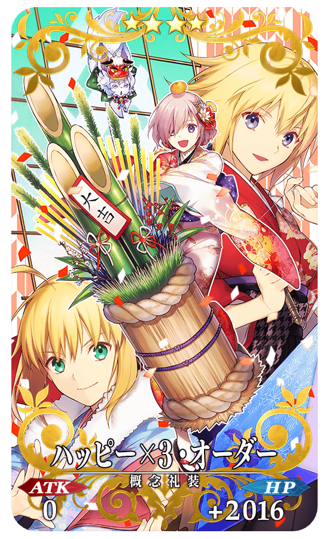
★★★★SR
ハッピー×3・オーダー
ATK 0 HP 2016（最大：2016）
技能
對自身賦予每回合Critical星星1個獲得狀態
◆領取條件◆
1月1日（五）3:00～1月13日（三）13:59的期間中，首次進行登入，贈送到禮物箱。
※期間內沒登入的話無法領取。
※禮物只能領取1次
◆マナプリズム交換限定概念禮裝◆
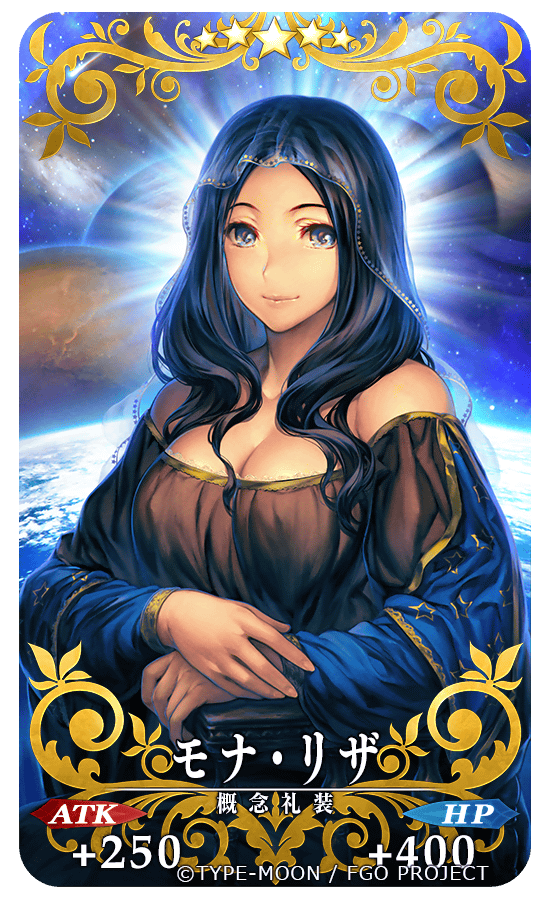
★★★★★SSR
モナ・リザ
ATK 250（最大：1000） HP 400（最大：1600）
技能
從掉落獲得的QP量增加2%
更以期間限定追加歡慶新年的「福袋2016」和放入技能＆靈基再臨素材的「素材福袋2016」！
◆福袋2016◆
黄金の果実8個
友情點數20160pt
呼符2枚
フォウくん卡計8枚
★3（ALL）ATK4枚
★3（ALL）HP4枚
◆素材福袋2016◆
混沌の爪、蛮心の心臓、鳳凰の羽根、蛇の宝玉、無間の歯車、隕蹄鉄、八連双晶、竜の逆鱗、禁断の頁、虚影の塵、英雄の証、ゴーストランタン、ホムンクルスベビー、凶骨、世界樹の種、竜の牙
上記的素材各封入2個。
※黄金の果実、友情點數、呼符、各素材會直接付與到所持道具。不會送到禮物箱。
2016年新春特別節目在NicoNico生放送配信！
標題為Fate/Grand Order 迦爾帝亞放送局 ～新年生放送～
來賓有FGO的重度使用者的聲優島﨑信長和飾演FGO的女主角的種田梨沙登場！
主持由在「バーサーカーでも分かるFGO講座」熟悉的マフィア梶田擔任。
關於Fate/Grand Order，會發展怎樣的話題？
因為在節目內也會有贈禮的發表，千萬別錯過！
◆節目標題◆
「Fate/Grand Order 迦爾帝亞放送局 ～新年生放送～」
節目頁面：
http://live.nicovideo.jp/watch/lv246279718
同時舉辦的宣傳活動在此：
http://www.fate-go.jp/cp/newyear/
◆放送時間◆
2016年1月4日（一）19：00～（預定約2小時）
◆出演者◆
島﨑信長（聲優）
種田梨沙（聲優）
マフィア梶田（主持）
◆新年PickUp召喚期間◆
期間：2015年12月31日(四) 23:00 ～ 1月7日(四) 22:59
以期間限定舉辦新年PickUp！
這次是以每日替換所PickUp的★5（SSR）Servant！
對象的★5（SSR）Servant「吉爾伽美什」、 「坂田金時」、 「迦爾納（初登場）」、 「阿周那（初登場）」、 「斯卡哈」5位出現率提升！
※吉爾伽美什、坂田金時、斯卡哈在PickUp召喚期間結束後，不會追加到故事召喚。
※迦爾納、阿周那在PickUp召喚期間結束後，預定在第五章配信時追加到故事召喚。
並且，期間限定概念禮裝「★5（SSR）グランド・ニューイヤー」、「★4（SR）ヒロイック・ニューイヤー」、「★3（R）2016年の平穏」、「★3（R）ジャングルの掟」出現率也會提升。是這時間點外無法入手的新年限定概念禮裝。
10次召喚★4(SR)以上1枚確定和★3(R)以上的Servant1位確定！
※★4(SR)以上確定包含Servant和概念禮裝。
| PickUp日 | PickUp Servant |
|---|---|
| 12月31日（四）23：00～1月1日（五）22：59 | 吉爾伽美什 |
| 1月1日（五）23：00～1月2日（六）22：59 | 坂田金時 |
| 1月2日（六）23：00～1月3日（日）22：59 | 迦爾納 |
| 1月3日（日）23：00～1月4日（一）22：59 | 阿周那 |
| 1月4日（一）23：00～1月5日（二）22：59 | 斯卡哈 |
| 1月5日（二）23：00～1月6日（三）22：59 | 迦爾納、阿周那 |
| 1月6日（三）23：00～1月7日（四）22：59 | 吉爾伽美什、坂田金時、迦爾納、阿周那、斯卡哈 |
※請注意每天都會變更內容，上述的PickUp Servant欄沒記載的對象Servant不會被召喚。
※關於其他的Servant・概念禮裝，請在聖晶石召喚畫面左下的「召喚詳細」確認。
迎接初登場Servant「★5（SSR）阿周那」、「★5（SSR）迦爾納」做為支援成員，挑戰期間限定的任務！
別錯過體驗各Servant的技能和寶具的機會！
※迦爾納的體驗任務在阿周那的體驗任務通過後開放。
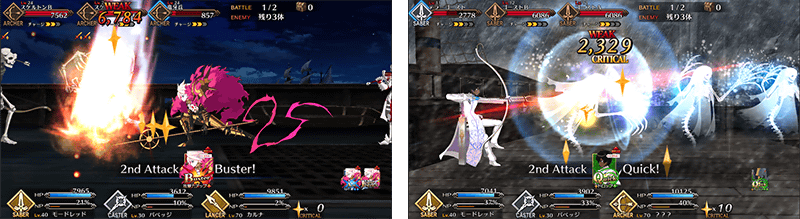
◆阿周那、迦爾納體驗任務的舉辦期間◆
期間：2016年12月31日(四) 23:00 ～ 1月7日(四) 22:59
◆任務通過報酬◆
呼符

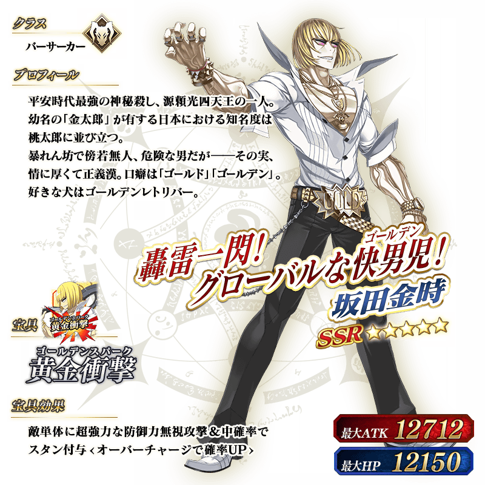
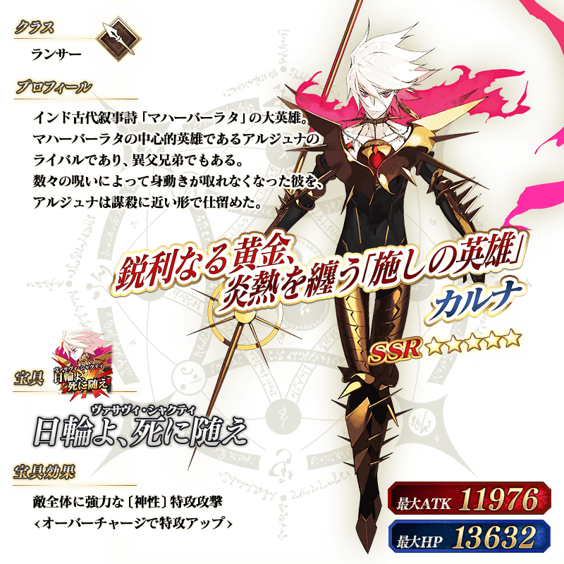
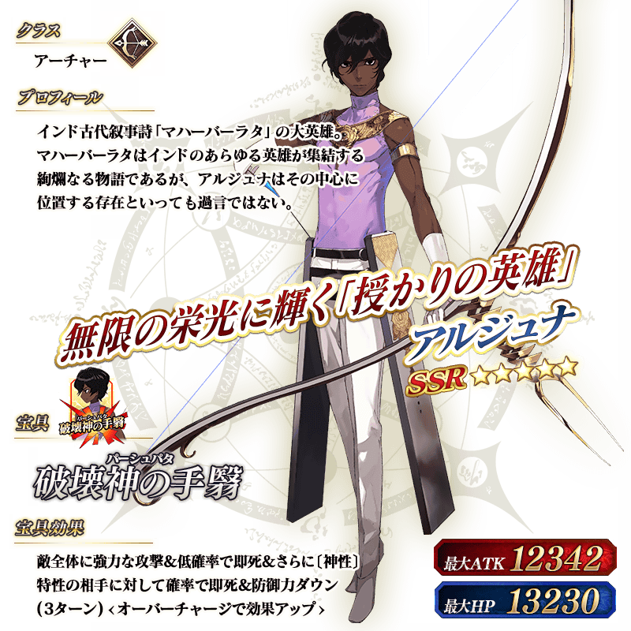
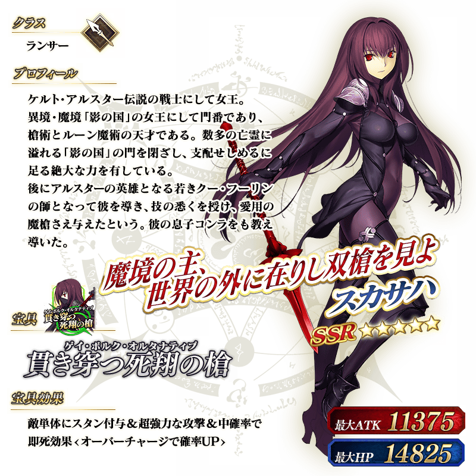
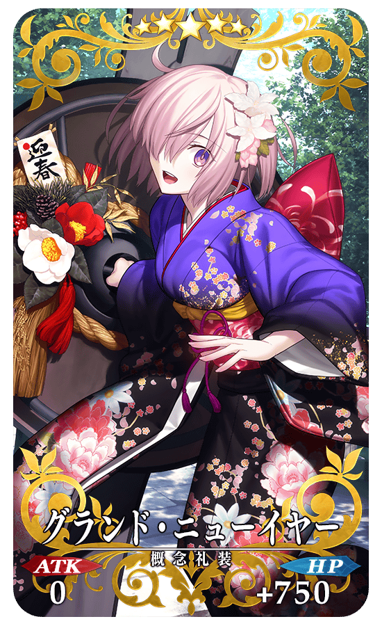
★★★★★SSR
グランド・ニューイヤー
ATK 0 HP 750（最大：3000）
技能
對自身賦予目標集中狀態（1回合）＆賦予無敵狀態（1回合）＆弱體耐性提升10%
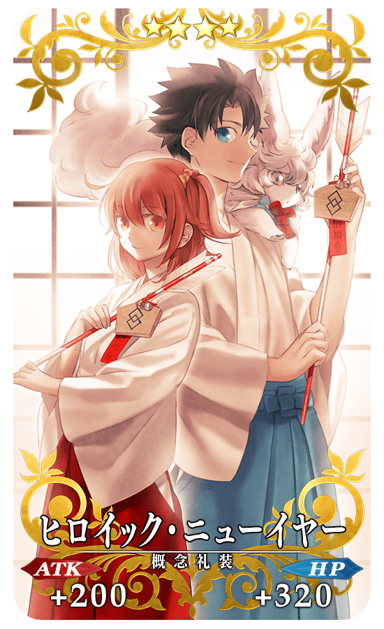
★★★★SR
ヒロイック・ニューイヤー
ATK 200（最大：750） HP 320（最大：1200）
技能
對自身賦予弱體無效狀態(1次)＆防禦力提升8％
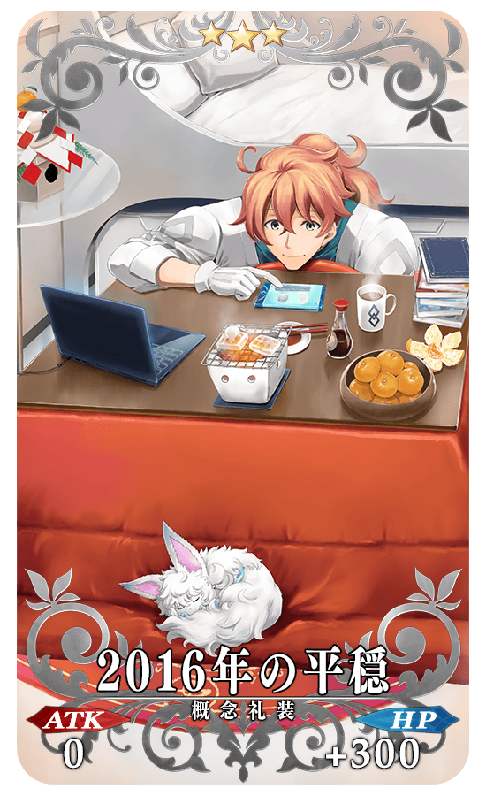
★★★R
2016年の平穏
ATK 0 HP 300（最大：1500）
技能
對自身賦予每回合HP200回復狀態＆攻擊力下降10%【副作用】
★★★R
ジャングルの掟
ATK 200（最大：1000） HP 0
技能
從通過任務獲得的QP增加2015